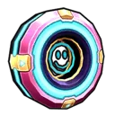

Assistente A.U.R.A.
Canção da Aura · Tier 15 · Nível 46
A IA camarada, Dotty, destacará as fraquezas dos inimigos para você! Ela também está coletando toneladas de informações pessoais sem o seu consentimento!
Atributos
Defesa
1.095
Vida
69
Economia
Valor
21.500.000
Tempo de fabricação
5d 7h
XP do comerciante
690.000
Trabalhadores: Bardo 38, Feiticeiro 34, Ferreiro 31
Receita


Marcos do projeto
4
Tempo de fabricação -25%
10
-136 Ferro
18
Valor +25%
25
-14 Éter
40
Chance de qualidade +1